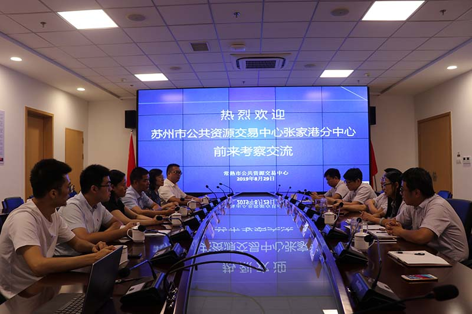

【信息发布时间：2019-09-04阅读次数：】 【我要打印】 【关闭】
8月29日，张家港市行政审批局副局长、苏州市公共资源交易中心张家港分中心主任顾一武一行来常学习考察，市行政审批局副局长、公共资源交易中心主任吕松陪同考察。
顾一武一行参观了市公共资源交易中心开标室、窗口区、评标区和办公区等各功能区。
在随后的座谈会中，双方就400万以下小额项目、乡镇公共资源交易、产权交易、保证金收退以及单位文化布置等内容进行了深入交流。
